Мебель
Виды буфетов
Буфетом называют и высокий поставец для парадной столовой, и маленький кухонный шкаф. Смотрим, для чего служил предмет, как устроены его отделения и какие детали сохранились.

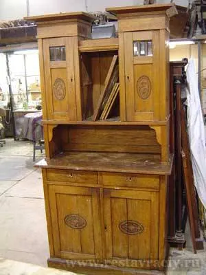
Что встречается в мастерской
Поставец и сервировочный буфет, высокий шкаф для большой столовой и компактный советский сервант различаются устройством и назначением. На фотографиях статьи мастерская показывает в том числе сервант, восстановленный в 2000 году.
О чём рассказывает мастерская
- Шкаф Хельга
- Советский сервант
- Немецкий сервант
- Горка со стеклом
- Поставец
- Купить старинный буфет
В материале мастерской
Фотографии и детали


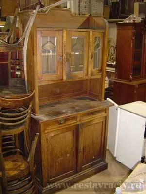
Открыть снимок у мастерской

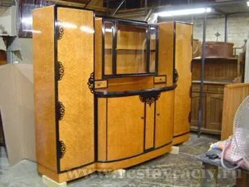
Открыть снимок у мастерской

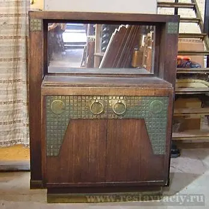
Открыть снимок у мастерской

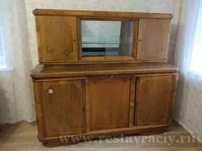
Открыть снимок у мастерской

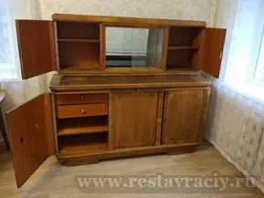
Открыть снимок у мастерской

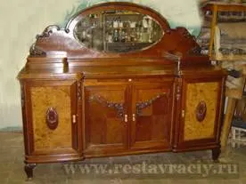
Открыть снимок у мастерской

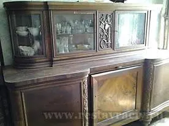
Открыть снимок у мастерской

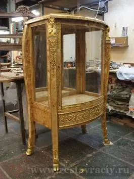
Открыть снимок у мастерской

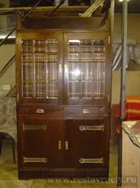
Открыть снимок у мастерской

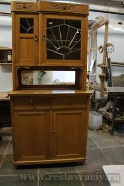
Открыть снимок у мастерской
Есть похожая вещь?
Подберите ракурсы для предварительной оценки.